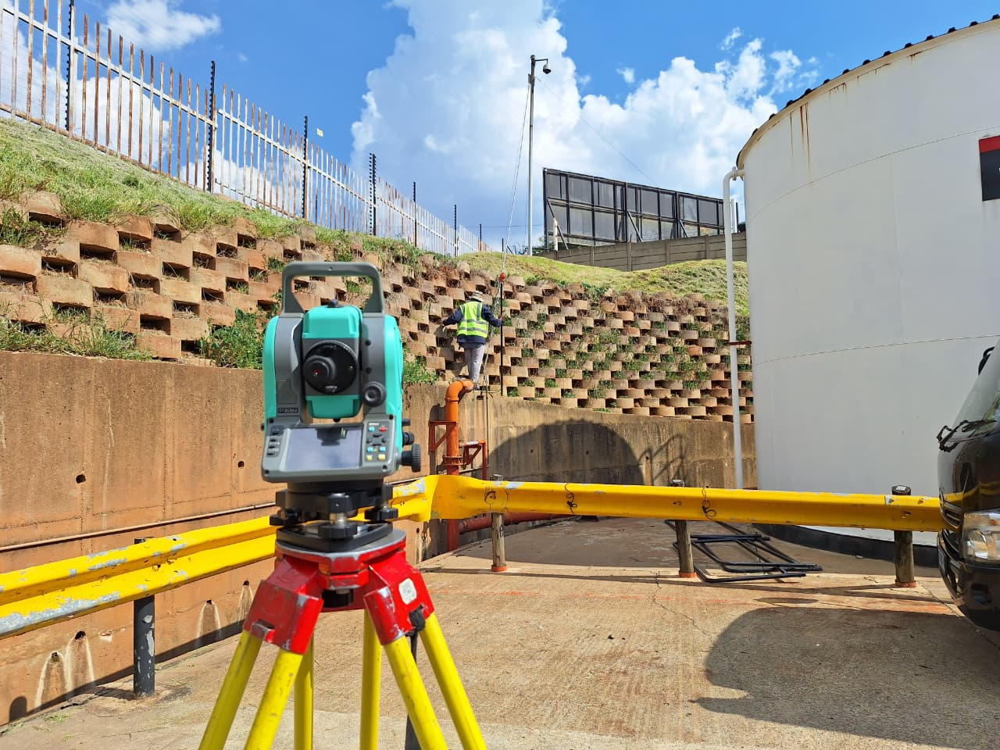

TopographicalCommercial Development Site – Midrand
Midrand, Gauteng
32-hectare topographic survey for a mixed-use commercial development. Delivered full Civil 3D terrain model and drainage analysis for municipal submission.
32ha · Municipal approval obtained in 6 weeks